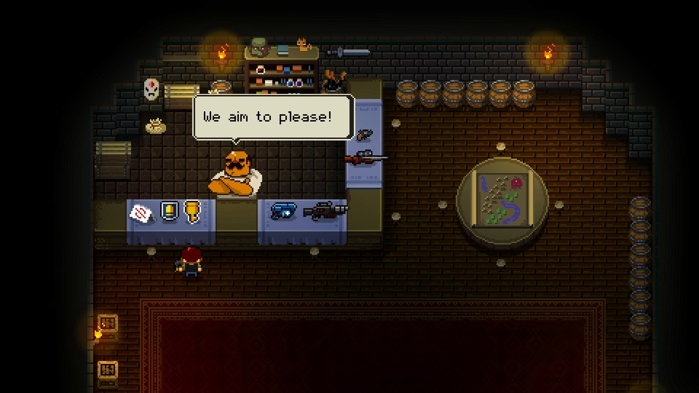

|

Enter the Gungeon is big inspiration for BT on aesthetics and execution of shooting mechanics
|
Design documentation
Lore documentation
Assets
|
|
Baedoor Travels is planned as second Baedoor RPG game, after Isle of Ansur. Its goal is to showcase areas of Baedoor universe
that are more oriental, and to be deeper introduction to game design that I eventually want to achieve.
The game would per planning take place in Azure Archipelago, starting with either Septei or Oe'os island. The area chosen has interesting
tension in between two massive civilisations living in each island.
Player would be put into this area without any specific story or main quest - being one of deliberate design decisions - but instead, it
would need to decide where to go. The place of main quest would be taken by complex and lengthy guild questlines instead.
The world of Baedoor is meant to be experienced and immersed into, therefore BT would bring a lot of that focus: as a player, you should
be able to visit every area, talk with every NPC, and be treated as part of the world.
You should be able to become a commonfolk, buying a house and starting your own business, or be hired as adventurer. The goal is to make
all fields of game interesting to play with, instead of making fight the big purpose.
Team
- Toma400 : lead
- DylanVHS : pixel artist
|